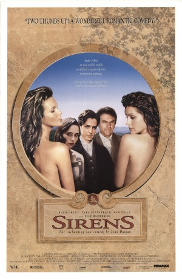

#11536 Verführung der Sirenen
 
 IMDB-Wertung: 5.8 / 10
IMDB-Wertung: 5.8 / 10  Metascore: 64
Metascore: 64 
A young reverend and his wife are on the way from England to Australia to minister to their flock. The bishop asks him to visit an eccentric artist prone to sexual depictions and requests that he voluntarily withdraw a controversial work call "Crucified Venus" from his show. The minister, who considers himself a progressive, is shocked at the amoral atmosphere surrounding the painter, his wife, and the three models living at his estate. The minister's wife is troubled also, and has to deal with latent sexual urges while trying to remain loyal to her husband.
Jahr: 1994
Dauer: 90 Minuten
FSK: 12
Land: Australien Studio: Winkler FilmTonspuren: DD2.0 - ,
Untertitel:
Auflösung: 1080p (1920x1040) Größe: 6717 MB
Genre: Drama, Komödie, Liebe
Regisseur: John Duigan
Drehbuch: John Duigan
Soundtrack: Rachel Portman
Darsteller:
 Hugh Grant als Anthony Campion
Hugh Grant als Anthony Campion Tara Fitzgerald als Estella Campion
Tara Fitzgerald als Estella Campion Sam Neill als Norman Lindsay
Sam Neill als Norman Lindsay- Elle Macpherson als Sheela
- Portia de Rossi als Giddy
- Pamela Rabe als Rose Lindsay
 Ben Mendelsohn als Lewis
Ben Mendelsohn als Lewis- John Polson als Tom
- Julia Stone als Jane
- John Duigan als Earnest Minister
- Tziporah Malkah als Pru
- Mark Gerber als Devlin
- Ellie MacCarthy als Honey
- Vincent Ball als Bishop of Sydney
- Lexy Murphy als British Bulldog Girl
- Scott Lowe als Station Master
- Bryan Davies als Barman
- Lynne Emanuel als Barmaid
- Kitty Silver als Pub Woman 1
- Carolyn Devlin als Pub Woman 2
- Peter Campbell als Articulate Drunk
Datei: X:\1994\Verführung der Sirenen (1994, FSK12, 1920x1040).mkv seit 22.07.2019
Festplatte: Gemischt-01+Anime
 Es gibt insgesamt 67 Filme in der Gruppe '1994'
Es gibt insgesamt 67 Filme in der Gruppe '1994'